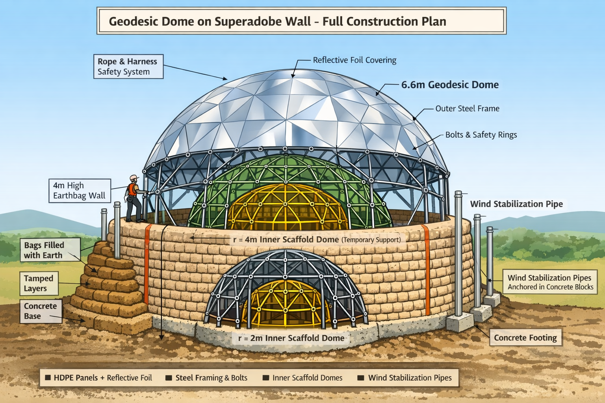

Location: Plovdiv, Bulgaria
Dome: V5 geodesic, radius 6.6 m
Wall: 4 m high superadobe (earthbags)
Construction duration: ~2 years (single-person assembly)
| Parameter | Value |
|---|---|
| Dome type | V5 icosahedron hemisphere |
| Radius | 6.6 m |
| Surface area | ~273.6 m² (outer dome) |
| Panels | 3 mm recycled HDPE, double skin (~380 sheets) |
| Frame | Steel circular hollow section (CHS), 30–40 mm OD, 2–3 mm wall |
| Struts | 375 for outer dome; r=4 m dome inner scaffolding ~225 m steel; r=2 m dome inner scaffolding ~37.5 m steel |
| Fasteners | Bolts, nuts, PUR bridging, heat welding for panel edges |
| Safety | Bolts with rings on outer dome vertices for rope fall protection |
Panel weight (double skin):
Steel frame weight: ~1,000 kg
Total dome weight: ~3,400 kg (~3.4 t)
Wind load (assume 1 kPa frontal pressure, strong winds):
Frontal area ≈ 34 m² → lateral force ≈ 3,400 kg (~33.5 kN)
Distributed over 36 wind-stabilization pipes → ~940 N per pipe (~95 kg)
Conclusion: Dome self-weight negligible vs superadobe wall; wind load easily managed with anchored steel pipes.
| Parameter | Value |
|---|---|
| Height | 4 m |
| Thickness | 0.8 m |
| Circumference | 41.5 m |
| Wall volume | 133 m³ |
| Bags | ~887 standard 0.5×0.3 m (0.15 m³) |
| Labor | Estimated €400 for filling and tamping |
Wall easily supports dome weight and lateral wind forces.
Thickness ensures stability and prevents crushing under dome load.
| Parameter | Value |
|---|---|
| Pipes | 36 steel CHS, 50–60 mm OD, 2–3 mm wall, 4 m tall |
| Anchors | Standard scaffolding base plates embedded in concrete blocks (36 × 0.3×0.3×0.4 m) |
| Function | Transfer lateral wind forces from dome into ground; earthbags around pipes add stability and friction |
| Parameter | Value |
|---|---|
| r = 4 m dome | 225 m steel, CHS 30 mm OD, 2 mm wall, ~450 kg steel |
| r = 2 m dome | 37.5 m steel, CHS 30 mm OD, 2 mm wall, ~75 kg steel |
| Purpose | Allow safe access for assembly of outer dome; supports temporary platforms |
| Safety | Anchored to floor/outer dome base; lightweight for single-person assembly |
| Parameter | Value |
|---|---|
| Material | 3 mm recycled HDPE |
| Skin | Double-skin with air gap and PUR bridging for rattle/wind stability |
| Surface finish | Heat-applied UV-stable foil (metallic or glossy) |
| Advantages | Modular repairable, low-maintenance, flexible to thermal expansion, shiny effect |
| Maintenance | Replacement/repair possible in sections; lifespan 5–10 years in Plovdiv climate |
| Fall safety | Use embedded rings on outer dome with rope lanyards |
Foil cost: ~€6,500–7,000 for full coverage (~273 m²)
| Component | Quantity | Cost |
|---|---|---|
| Bolts + rings (fall protection) | ~750 | €1,875 |
| Misc hardware (nuts, washers, PUR bridging) | — | €300 |
| Rope/lanyards for fall protection | — | €500 |
Build r=2 m inner dome, bolt together, anchor securely.
Build r=4 m inner dome around it, use as scaffolding.
Construct outer dome frame progressively from base upward.
Install HDPE panels (double-skin) using bolts and PUR bridges.
Apply heat-applied foil on panels (ideally before final assembly).
Install embedded rings for fall protection and maintenance access.
Build earthbag wall in parallel or prior, 4 m high, 0.8 m thick.
Install 36 wind-stabilization steel pipes, anchor with concrete blocks, wrap earthbags around bases for lateral support.
Inspect and secure dome; test ropes and fall protection.
Notes: Single-person assembly feasible over ~2 years, using inner domes as access scaffolding.
| Component | Cost (€) |
|---|---|
| Outer dome HDPE panels (double skin) | 6,460 |
| Outer dome steel frame | 3,000 |
| Inner scaffolding domes | 1,625 |
| Bolts + rings + fall protection | 2,375 |
| Wind stabilization pipes + concrete + anchors | 1,500 |
| Superadobe wall (bags + labor) | 1,300 |
| Heat-applied foil | 6,500–7,000 |
| Sealing / finishing / extra PUR bridges | 300 |
| Total | ~23,060–23,560 |
Notes:
Single-person assembly labor not included (over 2 years).
Foil allows maintenance via rope access using embedded rings.
Painting was omitted in favor of foil (lower maintenance, repairable).
Lightweight: HDPE panels ~2.4 t, steel frame ~1 t, manageable for single-person assembly.
Safe construction: inner scaffolding domes + embedded rings allow rope protection.
Wind-safe: 36 steel pipes anchored to concrete + earthbags stabilize dome under 1 kPa lateral wind.
Low-maintenance finish: heat-applied foil, UV-stable, repairable.
Modular design: panels and foil sections replaceable individually.
Inspect annually for loose bolts, foil damage, or UV degradation.
Minor repairs of foil can be done section by section using heat gun.
Full foil replacement expected every 5–10 years, depending on wear.
Bolts, ropes, and PUR bridges can be inspected/replaced on the same schedule.
Conclusion:
This plan is feasible for one person over two years, structurally safe, wind-stable, and provides a durable, shiny dome atop a 4 m superadobe wall. Cost for materials and hardware: ~€23,000–24,000.